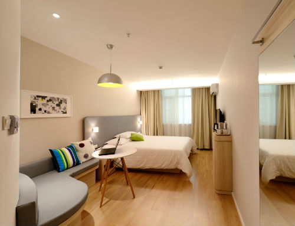

Specialized Services

Free access to changing rooms and bathroom facilities for temple patrons who have traveled far and need to change to
and from church clothes
A playroom and low-cost, short-term babysitting services for the children of patrons
Long-term stay accommodations in kitchenette suites for full-time temple missionaries
Temple history themed reception and sitting area
A wedding reception hall that can be easily customized with a simple catering menu and kitchen access for food
preparation and serving
A family search center that supports family search and ordinance work